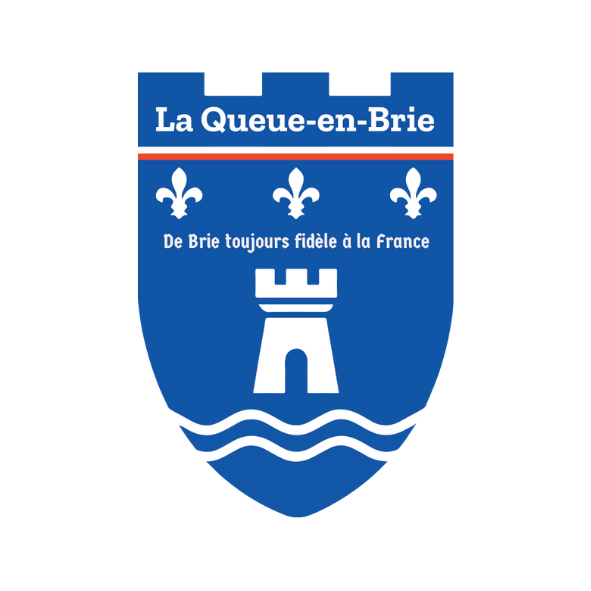
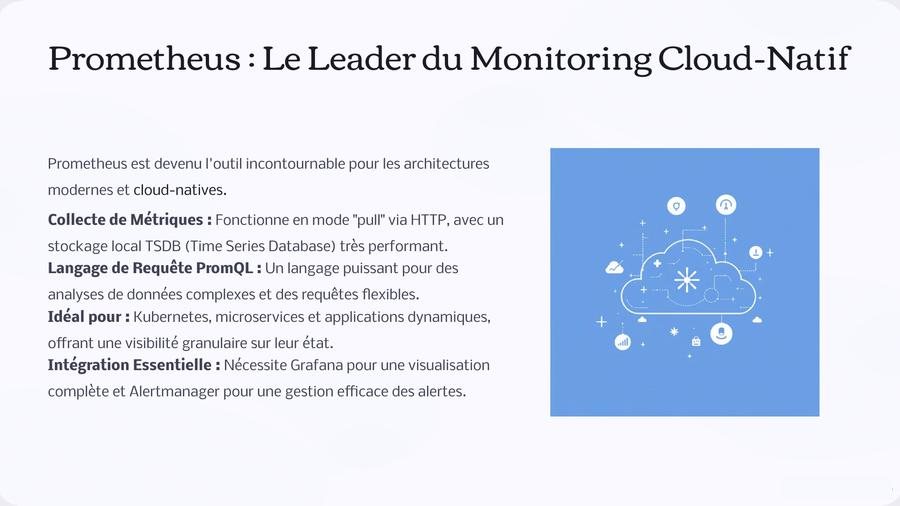
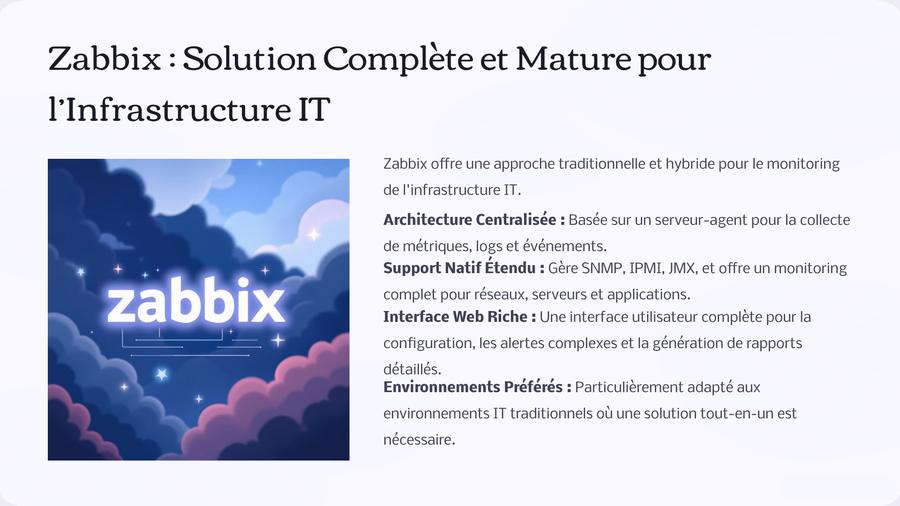
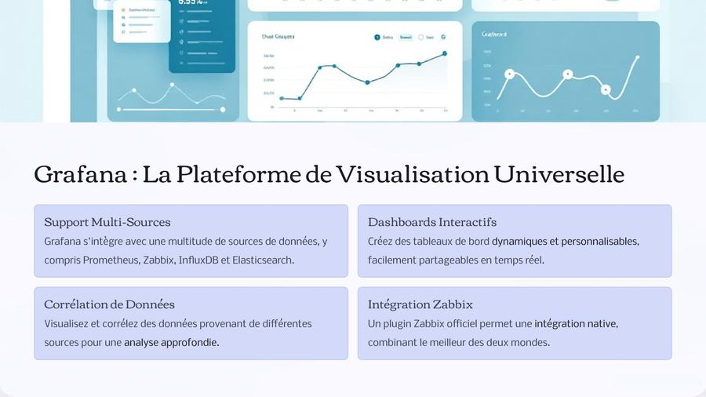

Ruben
LE FLANCHEC
Passionné par les infrastructures réseaux
et la cybersécurité — 19 ans

À propos de moi
 Ruben LE FLANCHEC
Ruben LE FLANCHECPassionné par l'informatique et les technologies réseau depuis mon plus jeune âge, je suis actuellement en 2ème année de BTS SIO option SISR au Lycée Louis Armand à Nogent-sur-Marne. Mon parcours m'a permis de développer des compétences solides en administration systèmes et réseaux, cybersécurité, virtualisation et support technique.
Curieux et autodidacte, j'apprécie les défis techniques et cherche toujours à optimiser les infrastructures pour les rendre plus performantes et sécurisées. Mes deux stages à la Mairie de La Queue-en-Brie m'ont permis de mettre en pratique ces compétences dans un environnement réel et exigeant.
Compétences techniques
Informations
Tableau de Synthèse
| Réalisations professionnelles | Gérer le patrimoine informatique | Répondre aux incidents et demandes d'assistance | Développer la présence en ligne | Travailler en mode projet | Mettre à disposition un service informatique | Organiser son développement professionnel | |
|---|---|---|---|---|---|---|---|
| Réalisations en cours de formation | |||||||
| Création d'un site Web (HTML, CSS, SSL) | 22/09/25 → 20/12/25 | ✔ | |||||
| Mise en place d'un AD, base de données et serveur WEB | 22/09/25 → 20/12/25 | ✔ | ✔ | ✔ | |||
| Sécurisation de l'Active Directory et Windows Server | 22/09/25 → 20/12/25 | ✔ | ✔ | ||||
| Mise en place d'un serveur GLPI | 17/11/25 → 20/12/25 | ✔ | ✔ | ✔ | ✔ | ||
| Zabbix — Supervision réseau | 11/03/25 → 25/03/25 | ✔ | |||||
| Portfolio HTML/CSS/GitHub Pages/Git | 02/03/25 → 28/03/25 | ✔ | ✔ | ||||
| Stormshield — Pare-feu & filtrage | 03/03/25 → 28/03/25 | ✔ | ✔ | ✔ | ✔ | ||
| Serveur LAMP | 03/03/25 → 28/03/25 | ||||||
| Réalisations en milieu professionnel — 1ère année | |||||||
| Traitement des tickets via GLPI | 26/05/25 → 05/07/25 | ✔ | ✔ | ✔ | |||
| Mastérisation des postes, configuration des téléphones Cisco | 27/05/25 → 05/07/25 | ✔ | ✔ | ✔ | |||
| Déploiement de postes via script automatisé WDS/MDT | 26/05/25 → 05/07/25 | ✔ | ✔ | ✔ | |||
| Réalisations en milieu professionnel — 2ème année | |||||||
| Traitement des tickets via GLPI | 05/01/26 → 13/02/26 | ✔ | ✔ | ✔ | |||
| Configurations des comptes Office 365 | 05/01/26 → 13/02/26 | ✔ | ✔ | ✔ | |||
| Réseaux Fibre — câblage et raccordement | 05/01/26 → 13/02/26 | ✔ | ✔ | ✔ | |||
| Gestion des codes d'alarme via Acre Intrusion Connect | 05/01/26 → 13/02/26 | ✔ | ✔ | ✔ | |||
Mon Stage

Mairie de La Queue-en-Brie
J'ai effectué mes deux périodes de stage au sein du service informatique de la Mairie de La Queue-en-Brie, une commune du Val-de-Marne (94). Ce stage m'a permis de découvrir et d'intervenir sur l'infrastructure informatique d'une collectivité territoriale, avec des missions variées allant du support aux agents jusqu'à la gestion et la maintenance du parc informatique municipal, en passant par des projets d'infrastructure réseau et de déploiement de postes.
Support utilisateurs (Niveau 1 & 2)
Assistance et dépannage des agents municipaux sur leurs postes de travail — matériel, logiciel, périphériques et problèmes réseau
Gestion du parc informatique
Inventaire, maintenance préventive et curative du parc matériel (PC, imprimantes, téléphones, tablettes) via GLPI
Administration réseau
Gestion de l'infrastructure réseau locale, configuration des équipements actifs (switches, routeurs), câblage fibre
Administration serveurs Windows
Maintenance des serveurs Windows Server, gestion et création de comptes utilisateurs et groupes Active Directory
Sécurité informatique
Application des politiques de sécurité, mises à jour système, gestion antivirus, sensibilisation des agents aux bonnes pratiques
Gestion des tickets GLPI
Traitement et suivi des incidents remontés par les agents via l'outil GLPI — qualification, résolution et clôture des tickets
Configuration téléphonie Cisco
Mastérisation des postes, configuration et déploiement des téléphones IP Cisco sur le réseau de la mairie
Office 365 & Messagerie
Configuration et gestion des comptes Office 365 des agents, migration, licences et dépannage de la messagerie Exchange
Déploiement automatisé WDS/MDT
Déploiement de postes de travail via scripts automatisés Windows Deployment Services et Microsoft Deployment Toolkit
Système d'alarme Acre
Gestion des codes d'alarme des utilisateurs de l'organisation via la plateforme Acre Intrusion Connect
Tuteur de stage
Service Informatique Municipal
Mairie de La Queue-en-Brie · 94510 Val-de-Marne
Objectifs pédagogiques
- Découvrir l'informatique en collectivité territoriale
- Maîtriser le support utilisateurs en environnement réel
- Gérer un parc informatique municipal complet
- Consolider les compétences réseau & Active Directory
- Utiliser et administrer un outil de ticketing (GLPI)
- Déployer des postes via WDS/MDT en automatisé
- Appréhender la sécurité dans un contexte institutionnel
Projets

Infrastructure Réseau & VLAN
Conception et déploiement d'une infrastructure réseau complète pour une PME de 50 postes. Mise en place de VLANs, routage inter-VLAN, services DHCP/DNS, segmentation réseau et sécurisation des accès par ACL.

Sécurisation Active Directory
Déploiement et sécurisation d'un environnement Active Directory avec GPO, gestion des droits, politique de mots de passe robuste, délégation d'administration et audit de sécurité complet avec journalisation.

Virtualisation & Déploiement WDS/MDT
Infrastructure virtualisée avec Hyper-V, gestion des ressources et snapshots. Déploiement automatisé de postes via Windows Deployment Services et Microsoft Deployment Toolkit avec scripts personnalisés.

Serveur GLPI — Helpdesk & ITSM
Installation et configuration complète d'un serveur GLPI pour la gestion du parc informatique et du helpdesk. Mise en place des catégories de tickets, SLA, base de connaissances et inventaire automatique via FusionInventory.

Pare-feu Stormshield
Configuration et administration d'un pare-feu Stormshield SNS. Mise en place de règles de filtrage, politique de sécurité réseau, VPN, inspection SSL, proxy et journalisation des flux pour une PME.

Portfolio Web — GitHub Pages
Conception et développement d'un portfolio professionnel en HTML5/CSS3 avec animations JavaScript. Déploiement continu via GitHub Actions sur GitHub Pages, gestion de version Git et hébergement SSL/HTTPS.
Monitoring & Supervision IT
Prometheus 3.0 — Première maj majeure en 7 ans
Prometheus passe en version 3.0, marquant sa première mise à jour majeure depuis 7 ans. Au programme : support OpenTelemetry amélioré, Remote Write 2.0, histogrammes natifs, nouvelle interface utilisateur et meilleures performances globales. Découvert via le subreddit r/PrometheusMonitoring.

Zabbix 7.4 — Moins de travail, plus de profondeur
Zabbix 7.4 est sorti le 1er juillet 2025 avec un assistant d'hôte pour simplifier la configuration, le LLD imbriqué pour les environnements multi-niveaux, la validation des champs en ligne pour détecter les erreurs instantanément, et l'édition en direct du tableau de bord. Découvert via le compte Twitter officiel @zabbix.

Grafana 12.2 — Observability as Code & IA intégrée
Grafana 12 introduit le concept d'Observability as Code : gestion des dashboards versionnés avec Git, automatisation CI/CD, expressions SQL optimisées par LLM, rapports simplifiés et plugin source de données Jenkins pour visualiser les pipelines. Découvert via r/grafana sur Reddit.

Sources de veille utilisées
prometheus.io/blog/2024/11/14/prometheus-3-0/
zabbix.com/whats_new_7_4
grafana.com/blog — grafana-12-release
Me contacter
Restons en contact
N'hésitez pas à me contacter pour toute opportunité professionnelle, stage, alternance ou question concernant mon profil. Je serai ravi d'échanger !